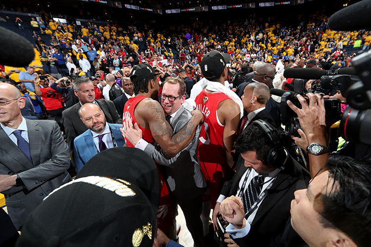
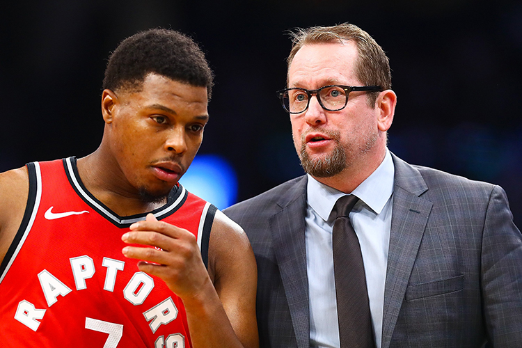
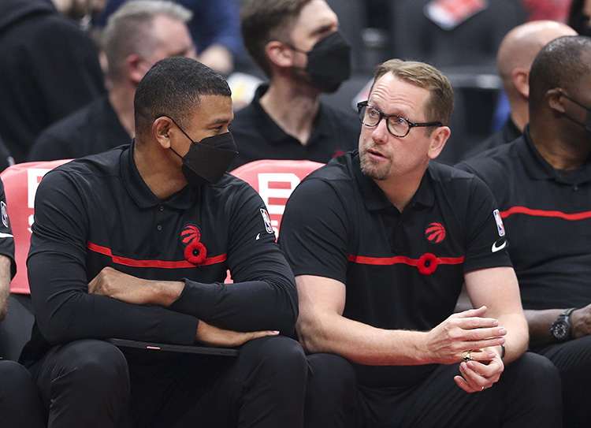
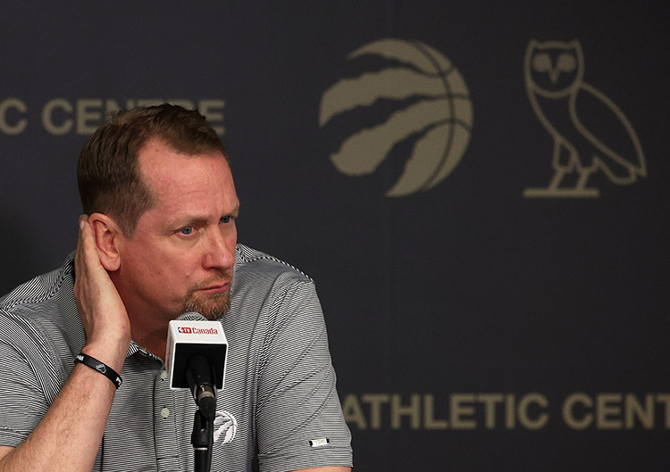

Nick Nurse's time at the Raptos by-the-numbers
After five seasons as the Toronto Raptor's head coach, Nick Nurse is moving on. This is the story the numbers tell of his tenure.
The Raptors overall win ratio over the five seasons with Nurse at the helm
 Hover over the lines to see the ratio details
Hover over the lines to see the ratio details Tap over the lines to see the ratio details
Tap over the lines to see the ratio details
Nick Nurse's stats as Raptor's Head Coach
All regular seasons
Wins
227
Losses
163
Win Ratio
.582
All playoff games
Wins
25
Losses
16
Win Ratio
.610
2018-19 season
Season overview
Ahead of the 2018-19 season, the Raptors traded franchise cornerstone DeMar DeRozan and Jakob Poeltl to the San Antonio Spurs for Kawhi Leonard and Danny Green. The move paid off. The team's offence and defence ratings were both in the league top 5 that year. The Raptors won the championship and Nurse was named Coach of the Year.
Regular season stats
Wins
58
Losses
24
Win Ratio
.707
Season Ratio
Outcomes
Regular Season: Finished second place in the Eastern Conference, behind the Milwaukee Bucks.
Playoff: Defeated the Magic in the first round (4-1), the 76ers in the second round (4-3), the Bucks in the Conference Finals (4-2), and the Warriors in the NBA finals (4-2) to become the NBA Champions.
2019-20 season
Season overview
Kawhi Leonard opted to leave for the LA Clippers after the Championship to the disappointment of Raptors fans. Despite being written off by many basketball pundits, the team had an impressive run over the shortened season due to the COVID-19 pandemic and showed they were still championship contenders. Pascal Siakam and Kyle Lowry were chosen for the All-Star game.
Regular season stats
Wins
53
Losses
19
Win Ratio
.736
Season Ratio
Outcomes
Regular Season: Finished second in the Eastern Conference behind the Milwaukee Bucks with the second-best record in the league.
Playoff: Swept the Nets in the first round (4-0) before losing to the Celtics in the conference semi-finals (4-3).
2020-21 season

Season overview
The season didn't start until December and was shortened to 72 games because of the pandemic. Due to travel restrictions across the border, the Raptors had to play their home games in Tampa Bay. It was the first time in seven years the Raptors did not reach the playoffs.
Regular season stats
Wins
27
Losses
45
Win Ratio
.375
Season Ratio
Outcomes
Regular Season: Finished 12th in the Eastern Conference with the lowest winning percentage during Nurse's tenure at the Raptors.
Playoff: Did not qualify.
2021-22 season
Season overview
Before the 2021-2022 season, franchise linchpin Kyle Lowry was traded to the Miami Heat. The Raptors welcomed rookie Scottie Barnes, who they drafted with the fourth overall pick. Barnes would go on to win NBA Rookie of the Year.
Regular season stats
Wins
48
Losses
34
Win Ratio
.585
Season Ratio
Outcomes
Regular Season: Finished fifth place in the Eastern Conference.
Playoff: Lost in the first round against the 76ers (4-2).
2022-23 season
Season overview
Nurse's last season with the Raptors saw the team qualify for the play-in tournament for the first time. The Raptors lost to the Chicago Bulls after blowing a 19-point lead in the 3rd quarter.
Regular season stats
Wins
41
Losses
41
Win Ratio
.500
Season Ratio
Outcomes
Regular Season: Finished ninth place in the Eastern Conference.
Playoff: Missed the playoffs after losing their first play-in game against the Bulls.
Source: NBA.com